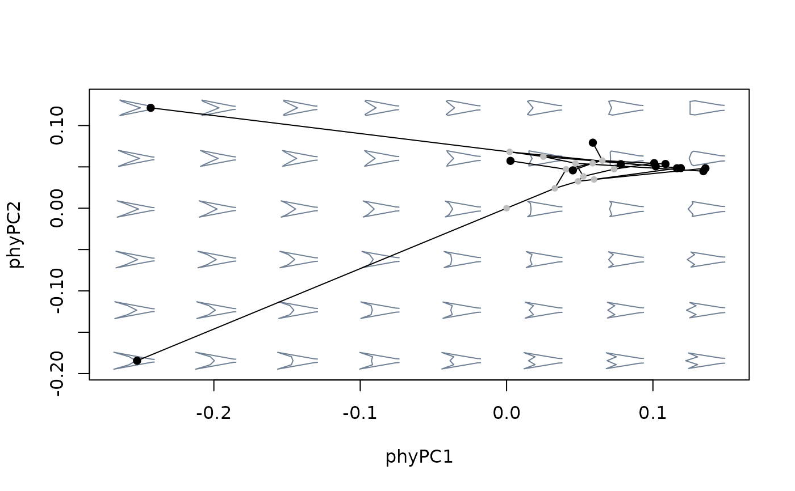
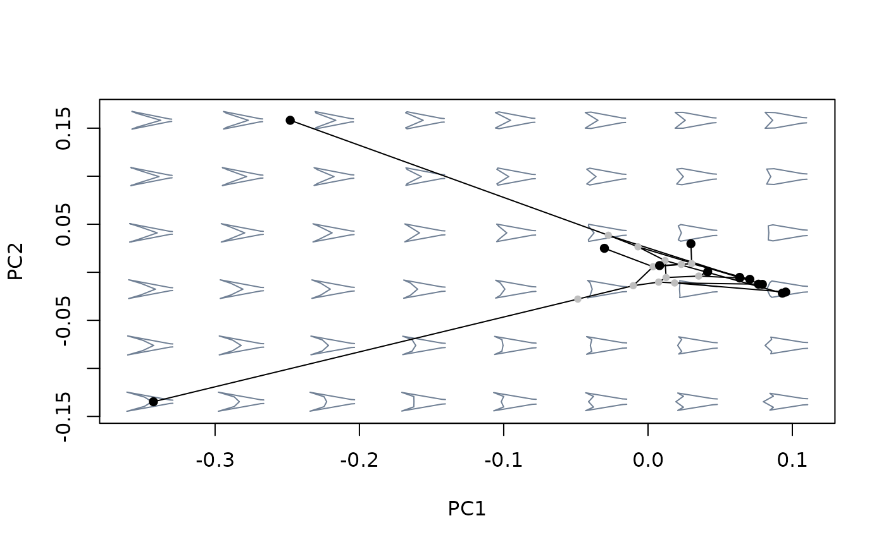

A wrapper for phytools::phyl.pca().
phy_prcomp(x, tree, corr = FALSE, ...)A matrix with one or more variables as columns and observations as
rows. Row must be named and match tip labels from the phylogenetic
tree.
A "phylo" object containing a phylogenetic tree. Tip
labels should match the row names from x.
Logical; whether to use correlation instead of covariance matrix as input.
Further arguments passed to phytools::phyl.pca().
A "phy_prcomp" object formatted following the "prcomp"
class:
$x: a matrix with the scores of observations in the new
ordination axes.
$values: singular values from the SVD of the phylogenetic
rate matrix.
$rotation: a matrix of eigenvector coefficients.
$center: the phylogenetic mean (i.e., the shape estimated
for the root of the tree).
$totvar: the sum of the variances of the original data.
$lambda, $logL: fitted value of lambda and log-likelihood
of the model; see phyl.pca.
Phylogenetic PCA finds the linear combination of variables (in
the context of morphospace will generally be a series of shapes
arranged as 2-margin matrix) maximizing the residual variation left after
removing covariation explained by phylogenetic history (i.e., they reflect
the covariance that would correspond to a star phylogeny), assuming a
Brownian model of evolution.
Phylogenetic PCA has some important differences relative to regular PCA. First, the resulting ordination is centered around the phylogenetic mean (i.e., the values estimated for the root of the tree) instead of the overall centroid of the original variables. More importantly, both phylogenetic PCA's eigenvectors and eigenvalues have been constructed using covariation that is independent of phylogenetic structure. However, only the orientation of the scores on those axes, and not their variances, reflect this adjustment. In other words, orientation of the phylogenetic PC axes are devoid of phylogenetic structure, but magnitudes measured in the resulting morphospace (e.g. distances, variances) still retain phylogenetic information.
Because of these properties, eigenvalues and variances computed from phylogenetic PC scores will differ. The former represents the amount of variation among the taxa after removing covariance accounted by phylogeny -- although their magnitude depends on the units used to measure branch length, and thus cannot be simply interpreted as a proportion of the original variance. Also, variance computed from pPC scores do not necessarily decrease for lower axes, and are not uncorrelated, meaning they can contain redundant information. For more details on the difference between phylogenetic and regular PCA, see Polly et al. 2013.
Like PCA, phylogenetic PCA does not change the dimensionality of the shape data set -- the number of resulting pPC axes will be be equal to the number of original variables (unless this is higher than the number of observations, in which case the number of resulting pPC will be equal to the latter).
Revell, L. J. (2009). Size-correction and principal components for interspecific comparative studies. Evolution, 63, 3258-3268.
Polly, P. D., Lawing, A. M., Fabre, A. C., & Goswami, A. (2013). Phylogenetic principal components analysis and geometric morphometrics. Hystrix, 24(1), 33-41.
Monteiro, L. R. (2013). Morphometrics and the comparative method: studying the evolution of biological shape. Hystrix, the Italian Journal of Mammalogy, 24(1), 25-32.
#load data and packages
library(geomorph)
data("tails")
#compute mean shapes for all species and extract the phylogenetic tree
sp_shapes <- expected_shapes(shapes = tails$shapes, x = tails$data$species)
tree <- tails$tree
#perform phylogenetic PCA
ppca <- phy_prcomp(x = two.d.array(sp_shapes), tree = tree)
#inspect results
names(ppca) #the contents of the resulting object
#> [1] "values" "rotation" "x" "center"
#exp_var(ppca) ##interpretation of eigenvalues is complex! not yet implemented
plot(ppca$x) #ordination
#compare shape variation as summarized by different methods
#build morphospace using phylogenetic PCA
mspace(sp_shapes, links = tails$links, nh = 8, nv = 6, FUN = phy_prcomp,
tree = tree) %>%
proj_phylogeny(sp_shapes, tree = tree)

#compare against morphospace built with ordinary PCA
mspace(sp_shapes, links = tails$links, nh = 8, nv = 6, invax = c(1,2)) %>%
proj_phylogeny(sp_shapes, tree = tree)
